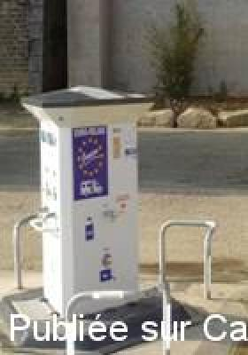
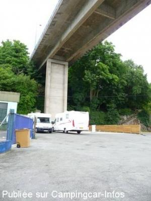
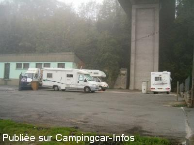
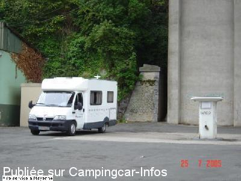

ASN = Aire de services avec stationnement nuit possible de :
MAYENNE
(N° 692)
Accès/adresse :
Quai Carnot
53100 MAYENNE
53100 MAYENNE
Latitude : (Nord) 48.29984° Décimaux ou 48° 17′ 59′′
Longitude : (Ouest) -0.61974° Décimaux ou 0° 37′ 11′′
Tarif : 2012
Stationnement gratuit
Eau : 1,50 €
Jetons à l'Office de tourisme du Pays de Mayenne à la Halte fluviale Quai Waiblingen
Type de borne : EURO-RELAIS
Services :


Autres informations :
Ouverte toute l'année
2 emplacements
Tél Office du Tourisme : +33 (0) 243 041 937

Le 24/09/2012 par

Le 05/11/2008 par Carol

Le 02/11/2006 par Rougui

Le 18/06/2006 par christianbrieuc
de
Pierre56
le 12/02/2009 :
Pas d'électrique.
Pas d'électrique.
de
camilleb61
le 19/11/2008 :
Aire au bout du quai sous un pont - borne neuve en très bon état (pas celle sur les photos) - jetons GRATUITS disponibles chez différents commerçants de la ville.
Endroit en pente peu engageant pour y dormir (il y a pire) MAIS l'Office de Tourisme conseille de loger sur le quai juste en face (après le pont) en dessous de leur bureau - hauteur limitée à 3m20
CEPENDANT: Quand je suis passé il ne restait plus qu'UN SEUL MALHEUREUX jeton - tous les autres ayant été "empruntés" par de CCaristes qui ne veulent pas payer autre part. Après çà, il ne faudra plus nous étonner que ne nous sommes plus désirés ou que les services soient payants. MERCI MAYENNE
Aire au bout du quai sous un pont - borne neuve en très bon état (pas celle sur les photos) - jetons GRATUITS disponibles chez différents commerçants de la ville.
Endroit en pente peu engageant pour y dormir (il y a pire) MAIS l'Office de Tourisme conseille de loger sur le quai juste en face (après le pont) en dessous de leur bureau - hauteur limitée à 3m20
CEPENDANT: Quand je suis passé il ne restait plus qu'UN SEUL MALHEUREUX jeton - tous les autres ayant été "empruntés" par de CCaristes qui ne veulent pas payer autre part. Après çà, il ne faudra plus nous étonner que ne nous sommes plus désirés ou que les services soient payants. MERCI MAYENNE
de
carol
le 05/11/2008 :
We stayed here September for 2 nights, it is right beneath the road
viaduct - so can be noisy. It was busy when we were there, and parking
could be a problem, borne all worked well. Easy parking actually in the
town, and easy to walk around. Rapido factory is not too far.
Carol
We stayed here September for 2 nights, it is right beneath the road
viaduct - so can be noisy. It was busy when we were there, and parking
could be a problem, borne all worked well. Easy parking actually in the
town, and easy to walk around. Rapido factory is not too far.
Carol
de
René Letertre
le 17/01/2007 :
J'ai avec beaucoup de plaisirs visité votre site et consulté de nombreux e-mails de Camping-Caristes. Je suis utilisateur de Camping-Car depuis de très nombreuses annnées (j'ai commencé à l'époque où les aires (de service ou de stationnement) n'existaient pas. Et, de grâce, pour continuer à utiliser nos véhicules dans de bonnes conditions, avec un maximum de liberté, ne confondons pas les deux: une aire de services n'est pas une aire d'accueil et vice versa;(ne créons pas des attroupements mal-vus par les riverains, ne donnons pas à nos détracteurs les verges pour nous faire fouetter). N'oublions pas, non plus, le mot "R E S P E C T", mot dont la déclinaison à fait l'objet d'une très belle chartre élaborée par le SICVERL (chambre syndicale des constructeurs) et le CLCC (représentant des utilisateurs). Un autre conseil "Adhérez à un club d'utilisateurs", nous serons bien défendus.
AMICALEMENT
J'ai avec beaucoup de plaisirs visité votre site et consulté de nombreux e-mails de Camping-Caristes. Je suis utilisateur de Camping-Car depuis de très nombreuses annnées (j'ai commencé à l'époque où les aires (de service ou de stationnement) n'existaient pas. Et, de grâce, pour continuer à utiliser nos véhicules dans de bonnes conditions, avec un maximum de liberté, ne confondons pas les deux: une aire de services n'est pas une aire d'accueil et vice versa;(ne créons pas des attroupements mal-vus par les riverains, ne donnons pas à nos détracteurs les verges pour nous faire fouetter). N'oublions pas, non plus, le mot "R E S P E C T", mot dont la déclinaison à fait l'objet d'une très belle chartre élaborée par le SICVERL (chambre syndicale des constructeurs) et le CLCC (représentant des utilisateurs). Un autre conseil "Adhérez à un club d'utilisateurs", nous serons bien défendus.
AMICALEMENT
de
Pepere44
le 21/11/2006 :
En effet, l'aire sous le pont n'est guère engageante, mais sur recommandation de l' office du tourisme, il est possible de stationner sur l' autre rive, au pied de l' office du tourisme sur le quai. En centre ville mais au calme.
En effet, l'aire sous le pont n'est guère engageante, mais sur recommandation de l' office du tourisme, il est possible de stationner sur l' autre rive, au pied de l' office du tourisme sur le quai. En centre ville mais au calme.
de
Rougui
le 02/11/2006 :
Aire de service vraiment très mal située dans une ville aussi charmante. Placée en bout d'un quai en bordure de la MAYENNE sous un pont. Nous nous sentons en complète insécurité. Les forces de l'ordre sont passées deux fois au cours de la soirée.........
De plus, la borne de service est en très mauvais état. Carrosserie de cet équipement détruit et les branchementsd sont rouillés.
Un écriteau est placardé sur la borne nous indiquant de nous stationner sur un autre quai un peu plus loin face au chateau : Pourquoi ?????
Aire de service vraiment très mal située dans une ville aussi charmante. Placée en bout d'un quai en bordure de la MAYENNE sous un pont. Nous nous sentons en complète insécurité. Les forces de l'ordre sont passées deux fois au cours de la soirée.........
De plus, la borne de service est en très mauvais état. Carrosserie de cet équipement détruit et les branchementsd sont rouillés.
Un écriteau est placardé sur la borne nous indiquant de nous stationner sur un autre quai un peu plus loin face au chateau : Pourquoi ?????